About
Hello! My name is Abigail (Abby), I'm 19 years old, and I grew up in Menlo Park, California.
I built this because I wanted to showcase what I've done so far in a creative way, and since some of my favorite memories are visiting art museums, I figured why not combine the two.
Experience: I have strong skills in business development, machine learning, financial modelling, and many AI tools, but I'm also open to any new kind of opportunity that pops up (as you can see in my portfolio).
More about me: I have a younger brother named Joseph, and he's my favorite person in the world. You can see us together in the photos below. When I have free time, I love to read, crochet, travel, build side projects like this one, cook, and so much more.
I'm happiest when I'm learning something new or making something from scratch. Please feel free to reach out, and click the links on this page to find all of my contact information!
Experience
-
2024 AWS - Retail Crime Prediction
I worked as a Computer Science Intern at Amazon Web Services in Seattle during the summer of 2024.
Read moreShow less
I built a machine learning model that used geographic datasets to find risk patterns and inform site selection decisions. I spent a lot of my time turning the technical output into clear business insights because the model only mattered if the people making decisions could actually use it.
I placed second in an international AWS data competition and I presented my findings to senior leadership. I focused on risk forecasting and on explaining my analysis carefully because I wanted the room to trust the numbers.
- Machine learning
- Geographic data analysis
- Turning technical results into business insights
- Presenting to leadership
- Risk forecasting
-
2026 Maroon Cays Consulting
I worked as a Strategy Consulting Intern with the Winter Metcalf Clinic on the Maroon Cays Innovation Projects in early 2026.
Read moreShow less
I conducted market analysis and I evaluated the strategic positioning of a sustainability venture. I built investor-style pitch materials, and I prioritized partnerships based on market opportunity and how well they could scale.
I liked this work because it let me study a real business and then make concrete recommendations about where it should focus next.
- Market analysis
- Strategic positioning
- Investor pitch development
- Partnership prioritization
- Financial reasoning
-
2026 Gigamon - Product Management & Business Development
I joined Gigamon in June 2026 as a Product Management and Business Development Intern, working on the End of Sale and End of Life program: what happens when a product is retired, and how customers, partners and the sales teams hear about it in time to plan.
Read moreShow less
The program was under-resourced when I arrived, so I ran discovery, mapped what it actually did against what it needed to do, and then built the pieces myself.
What I built:
- An agent that formats the worldwide price list out of Salesforce, applies the pricing rules, and notifies the team the moment it is ready for a human to review
- A notification system that runs monthly, finds every product reaching end of sale or end of life within the next year, fills out the customer notice template I wrote and had approved by product management and legal, pulls the matching customer smart list from Salesforce into Adobe Marketo, and queues the email for a human to approve and schedule
- A data extractor that reads end of sale and end of life dates out of the product team's internal PDFs and writes them into Salesforce, so they carry on to every external system without anyone retyping them
- An agent that drafts the internal Slack messages and emails, and posts the public announcement to external channels including Vue Community
- A Trade Agreements Act certification agent that drafts TAA certifications for the products that need one, with the worldwide price list as the source of truth
I also built a model that predicts end of sale and end of life dates, so the product lifecycle team can plan against a forecast instead of waiting for each decision to land.
- Product discovery and scoping
- Requirements definition
- AI agents
- Salesforce
- Adobe Marketo
- Working across product, legal and sales
-
SDIG - Web Development
SDIG is the Systemic Diversity and Inclusion Group, a nonprofit that helps organizations and communities advance diversity, equity and inclusion through consultancy, education and hands on programs. I was their web development intern, and I redesigned and rebuilt their website.
Read moreShow less
This was a complete redesign rather than a refresh. I rebuilt every page, eighteen of them, from the home page through services, courses, educational programs, events, partners, associates, the blog, the store and contact.
I worked from what the nonprofit told me they needed the site to do, and to their guidance on the colour palette. I designed around that: a warm terracotta and cream palette, a headline that cycles through peace, equality, justice and inclusion so the mission is the first thing you read, and a structure that puts their services and their partner universities where people actually look for them.
- Web design and redesign
- Working to a client brief
- Colour and visual identity
- Information architecture
- Building out a full multi page site
Projects
-
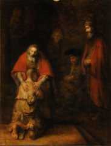
HelpMynd
2023 — 2026
I founded HelpMynd because I cared about mental health and I wanted to build something that actually reached the people who needed support. I started it in February 2023 and I ran it as Founder and CEO until January 2026.
Read moreShow less
I grew HelpMynd into a registered 501(c)(3) nonprofit with a team of more than 35 people across 15 countries, reaching over 60,000 site visitors a year. I sourced and closed more than 10 institutional partnerships, including Stanford Hospital and Jamaica's Ministry of Health, because I wanted the work to be credible and connected to real medical systems.
I built and launched a curated global mental health directory so people could find resources near them. I also led international conferences and workshops because I wanted HelpMynd to bring people together in person and not only live online.
I learned how to recruit people, keep a large remote team motivated, and turn an idea I believed in into an organization that runs across many time zones.
- Nonprofit leadership
- Building and managing a remote team
- Partnership development
- Public speaking
- Turning an idea into an organization
-
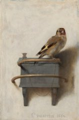
Museum Portfolio
This project is an interactive virtual museum designed to replace a traditional portfolio with an explorable digital experience.
Read moreShow less
Visitors navigate through galleries containing:
- Research experiences
- Internships
- Projects
- Awards
- UChicago programs
- Hobbies
- Personal interests
Each painting functions as an interactive exhibit that tells part of my story.
- React and Three.js
- 3D web development
- UX and UI design
- Git and deployment
- Creative problem solving
-
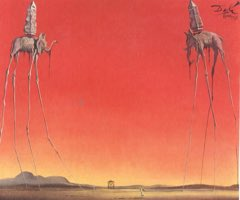
Serai - Driveway Parking Marketplace
Serai is a two sided marketplace for renting residential driveways by the hour. I founded it and built the whole thing myself for the UChicago Summer Tech Showcase, where it won first place out of more than 20 teams and a $1,500 prize.
Read moreShow less
I started with the research rather than the idea. I scrapped my original curb apron premise once city precedent said it would not hold, sized the real supply at 14,553 viable parcels out of 110,961 from DataSF geometry, and priced it with capped dynamic rates built on 47,525 SFMTA meter transactions.
Then I architected and deployed three applications: a driver app, a host wizard and an operator console, on Next.js 15, React 19 and TypeScript over PostgreSQL and PostGIS, with row level security and encrypted addresses. The map is hand inked and each listing gets its own generated illustration, both drawn on canvas from real city geometry.
It is in closed beta now while I validate demand on both sides before packaging it for the App Store and Google Play.
- Market sizing and pricing strategy
- Next.js, React and TypeScript
- PostgreSQL and PostGIS
- Product architecture
- Shipping and running a beta
-
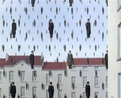
Handshake AI Agent
I don't like Handshake's recommendation algorithm for internships, jobs, and events, because it won't let you filter by internship time period or even by industry. So I am going to build my own.
Read moreShow less
I also want this agent to fill out my job applications for me, then email me to say it finished so I can do the final check. Hopefully a two day project I can knock out this summer.
-
SporeKeeper
A privacy-first Chrome extension that notices when you have started working and asks whether you clocked in, then helps you file the tabs you piled up while doing it. Built in TypeScript with 452 tests, zero runtime dependencies, and zero network requests. It is live and free on the Chrome Web Store, and there is also a browser demo if you would rather try it without installing anything.
Read moreShow less
You tell it what you are tracking, a job, a thesis, a contract, and what counts as working on it: a website, a project folder in your editor, a person who emails you. When you have actually been at it long enough, one of 54 original pixel-art companions appears over the page you are on, in one of 11 hand-painted scenes, and asks whether you clocked in.
It grew a second half along the way, because the same people who forget to clock in also have forty tabs open. Spore Forest sorts open tabs into folders you define by rules you write, and shows you the whole plan and the specific rule that matched each tab before it moves a single one. For job hunting it will read the role and company off every posting you have open and export the lot as a spreadsheet.
The organising constraint was privacy, and it shaped every technical decision. Zero network requests is not a policy here, it is a property of the code: there is no HTTP client in the codebase at all, no server, no account, no analytics, no telemetry. Everything it knows lives in the browser's own local storage. All 10 Chrome permissions are justified in writing against the file that uses them, and anything that reads more than strictly necessary is off by default.
Underneath: about 13,400 lines of strict TypeScript, 4,300 lines of tests, 4,700 lines of hand-written CSS with no framework, and a 422-line native messaging host so the extension can count time spent in an editor, which a browser cannot see by itself. Vitest runs 452 tests across 27 files. It ships with 0 runtime dependencies, so nothing reaches a user but my own code.
Four invariant checks fail the build rather than warn. Every storage key in the source must appear in the privacy policy or it will not compile, which has caught me twice. The packager refuses to ship a bundle older than the code it was built from.
All 54 companions are generated rather than licensed. I read all 7 pixel-art packs I evaluated, and 6 forbid redistribution, which publishing to the Chrome Web Store is. So I wrote a generator instead: creatures defined as shapes in code, rendered at build time, with the PNG encoder written from scratch against the format spec so even image encoding pulls in no dependency.
The linked demo is not the extension. It is the extension's real interface and real compiled logic running in a page against a simulated browser, so you can see exactly how it works without installing it. Every decision in it is the real one. The service worker, Chrome storage and real tabs are stand-ins, and the demo page says so itself rather than leaving you to find out.
-
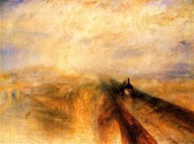
Lyft/Via UChicago App for Fall
2026
I won't say too much, because I'm not sure if this is allowed, but when the Via system gets overloaded with free UChicago requests, Via gives you a free Lyft.
Read moreShow less
I want to see if I can overload it on demand to get a free Lyft every time I want to Via somewhere. (Free lyfts everytime, muahahahahah.) Timeline is TBD, hopefully done before school starts in fall 2026.
Research
-
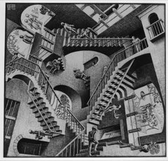
CMU - Rectangle Packing (NP-hard)
2024
I worked as a Research Intern at Carnegie Mellon University from January to November of 2024.
Read moreShow less
I designed and optimized algorithms for NP-hard rectangle packing problems. I worked directly with faculty and PhD researchers because the problems were hard and I learned a lot from people who had studied them for years.
I built the entire PackIt game, including its full AI mode. The game was presented at the 12th International Conference on Fun with Algorithms on the island of La Maddalena in Sardinia, Italy, in June 2024. I'm credited on page 26 of the published paper, which you can read below, and you can play the game at the link too.
I am proud of this work because rectangle packing problems are genuinely difficult and I got to push on them alongside serious researchers.
- Algorithm design
- Optimization
- NP-hard problem solving
- Research collaboration
- Technical presentation
-
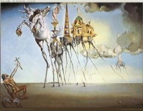
UCSB - LLM Hallucinations
I wrote a literature review paper on LLM hallucinations: how often they occur, the techniques used to reduce them, and what they mean for safely using large language models in mental health and clinical psychology. My paper focused on prompting techniques to reduce LLM hallucinations in clinical psychology settings.
Read moreShow less
I presented this paper at a UCSB international academic conference, where I was ranked in the top 10% of presenters out of more than 700, and I earned 2 UCSB academic credits for presenting it as a high schooler.
The full paper is being kept private while it is prepared for submission, so I'm sharing the presentation that walks through the work below.
- LLM evaluation
- Research methods
- Data analysis
- Technical writing
-
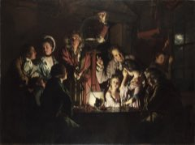
Booth - Center for Applied AI
2026
I worked at the University of Chicago Booth Center for Applied AI through the summer of 2026, on a research project run by Professor Levy and Anna Costello.
Read moreShow less
My work started as data collection. The project needed a large body of articles gathered and organised, and gathering them by hand is slow, repetitive and the kind of task that quietly eats a research timeline.
So I built an agent system that does it instead. It finds and downloads the articles on its own, with no human sitting over it, which turned the collection step from something somebody had to keep doing into something that simply runs.
- AI agents and automation
- Research data collection
- Working with academic researchers
- Turning a manual process into a system
-
UChicago HealthLab - Housing & Health
I joined the University of Chicago Section of Hospital Medicine as a Research Assistant under Dr. Jong-Wook Ban, on research into the intersection of health and housing instability: how the research priorities named by the communities affected compare with the ones chosen by experts and already funded.
Read moreShow less
I built the lab's website and worked on their marketing and outreach, so the work would be findable by the people and partners it needs to reach. I also completed the research certification training the lab requires.
The position is on hold at the moment while the lab looks for further funding.
The point of the research is to help future work and policy reflect what people experiencing housing instability actually need, rather than what is easiest to study.
- Web development
- Marketing and outreach
- Research certification
- Working inside an academic lab
University
-
Succeeding in the Entrepreneurial Workplace
The Succeeding in the Entrepreneurial Workplace program is a six-month professional development experience focused on preparing students for startup environments and entrepreneurial careers.
Read moreShow less
The program includes:
- Workshops on startup culture
- Professional communication training
- Career readiness sessions
- AI productivity tools
- Networking events
- Required cohort meetings
- Mentorship opportunities
At the conclusion of the program, participants are matched with startup internship opportunities and gain exposure to early-stage companies and entrepreneurial ecosystems.
-
Quantum in Business & Technology (QUBIT)
2025 — 2026
I was selected as a member of the 2025–2026 QUBIT Cohort, a highly selective University of Chicago program that admits only a small group of students from a large applicant pool.
Read moreShow less
The program combines technology, business, research, and professional development. Activities included:
- Career development workshops
- Technical training sessions
- Industry guest speakers
- Visits to organizations such as Argonne National Laboratory
- Networking with professionals in science, technology, and business
- Individualized career guidance
- Additional summer funding opportunities
Participation in QUBIT also provided an additional $1,000 in Metcalf summer funding support and access to a community of students interested in emerging technologies and interdisciplinary problem solving.
- Quantum and emerging tech literacy
- Interdisciplinary thinking
- Professional development
- Networking
-
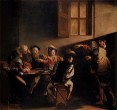
Venture Capital Immersion Week
2026
I was selected to participate in the University of Chicago Venture Capital Immersion Week, taking place September 22–25, 2026.
Read moreShow less
The program includes:
- Venture capital history and foundations
- Investment thesis development
- Market sizing
- Financial modeling workshops
- Portfolio construction
- Cap table analysis
- Deal sourcing
- Founder pitch evaluations
- Investment committee simulations
- Networking with investors and founders
- Office visit to DRW Venture Capital
- Sessions with Collaborative Fund, Chicago Ventures, Techstars, and other firms
Prior to the program, participants must independently:
- Develop an investment thesis
- Define sectors and fund strategy
- Build a sourcing pipeline
- Identify startup opportunities
- Create investment memos
- Analyze startup performance
- Determine pricing and check sizes
- Track portfolio performance over time
The program provides a rare opportunity to experience how venture capital firms evaluate companies and allocate capital.
-
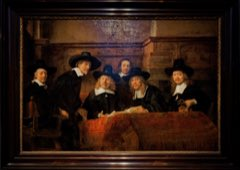
Blue Chips Investment Club
Blue Chips is one of the University of Chicago's most selective investing organizations. During my first year, I participated in New Member Education (NME), an intensive six-week program designed to teach students the fundamentals of value investing, equity research, financial accounting, valuation, and investment analysis.
Read moreShow less
The program required learning how to read and interpret financial statements, construct discounted cash flow (DCF) models from scratch, estimate intrinsic value, analyze competitive positioning, and ultimately develop an independent stock pitch supported by financial modeling. Participants were expected to absorb large amounts of material quickly and complete an examination covering the full curriculum.
Through the experience I discovered that while I genuinely enjoy investing, markets, and business strategy, I am more interested in building companies and products than pursuing traditional investment banking. Nevertheless, Blue Chips provided a strong foundation in valuation, financial analysis, and strategic thinking that continues to influence how I evaluate startups, research opportunities, and business models.
- DCF valuation
- Financial statement analysis
- Equity research
- Intrinsic value estimation
- Investment analysis
-
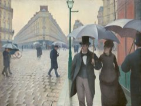
Summer Tech Showcase - Parking & Transportation App
2026
The UChicago Summer Tech Showcase ran from June to July 2026: $750 in starting funding, mentorship and office hours, and a final presentation in front of judges.
Read moreShow less
I used it to build Serai, a marketplace for renting residential driveways by the hour, as founder and sole builder. It took first place out of more than 20 teams and a $1,500 prize.
The showcase is the reason it exists as a real product rather than a sketch. The deadline forced me to size the market properly, drop the premise that did not survive contact with city precedent, and ship three working applications rather than one demo.
There is a full account of what I built in the Projects room.
Awards
-
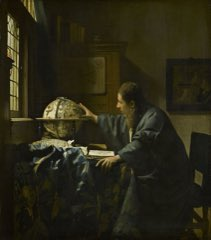
AP Scholar with Distinction
I earned the College Board's AP Scholar with Distinction award for my performance across my AP exams.
Read moreShow less
Scores of 5:
- AP Language & Composition
- AP Literature
- AP Calculus AB
- AP Calculus BC
- AP Computer Science Principles
- AP World History
- AP US History
- AP Government
Scores of 4:
- AP Biology
- AP Spanish Language
- AP Physics C: Mechanics
I also studied AP Psychology independently, though I chose not to sit the exam since UChicago does not grant credit for it.
-
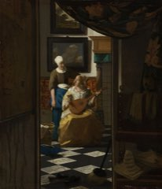
NSPA Leadership Award
I received the National Scholastic Press Association Leadership Award three times for my work in student journalism.
Read moreShow less
I led a newsroom: assigning and editing, holding a publication schedule, and deciding what was worth printing. Three years of it, which is the part I am proudest of, because leading a staff well once is luck and doing it repeatedly is not.
I earned it because I cared about the people on my staff as much as the stories we published.
-
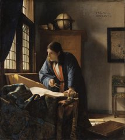
AWS AI Competition (2nd Place)
I placed second out of twenty two teams in an international AWS data competition, during my computer science internship at Amazon Web Services in Seattle.
Read moreShow less
I trained a machine learning model on geospatial datasets to find risk patterns and inform site selection: which places carried the most risk, and what in the geography explained it.
Then I presented it to senior leadership, and that part mattered as much as the model. I earned this because the analysis held up under scrutiny and because I could explain it clearly to people who were never going to read my code.
-
Congressional Recognition
I received Congressional Recognition from Representative Anna Eshoo, who represents the district I grew up in on the San Francisco Peninsula.
Read moreShow less
It came from work that reached my own community rather than anything abstract. Being recognised by my own representative meant a lot to me, because it tied the effort back to the place I am from and to the people it was actually for.
Leadership
-
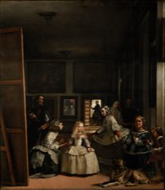
Journalism / Newspaper Leadership
I led my school newspaper, and I earned the NSPA Leadership Award for that work.
Read moreShow less
I ran the newsroom because I loved both the writing and the people. I edited stories, I set the direction for our coverage, and I made sure my staff had what they needed to do their best work.
I learned how to lead a creative team under deadline because a newspaper does not wait for anyone.
- Editorial leadership
- Team management
- Writing and editing
- Working under deadline
- Communication
-
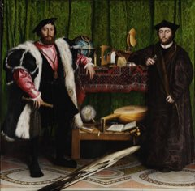
Pinewood Envoys
As Community Outreach Head of the Pinewood Envoys Program, I organized over five career fairs, guest speaker events, and open houses to strengthen the connection between students and alumni. My goal was to give students real career insights and networking opportunities while building long-term alumni relationships and a stronger professional community at my school.
- Ambassadorship
- Public speaking
- Relationship building
- Representing an organization
-
Peer Tutoring Program
I founded and led my school's Peer Tutoring Program, pairing upperclassmen with underclassmen to improve academic outcomes. I trained over ten tutors, organized the schedules and tutoring pairs, and built a supportive, collaborative learning environment that lifted grades and fostered mentorship across grade levels.
- Teaching
- Clear explanation
- Patience
- Subject mastery
- Mentoring
-
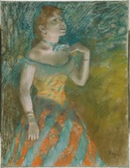
Drama Club
As a Drama Club Instructor for the Middle Campus Drama Club at Pinewood, I choreographed and directed seventeen plays for students in grades three through six. I guided them through the whole production process, from auditions to performances, helping them build confidence, creativity, and public speaking skills in a fun and supportive environment.
- Performance
- Public speaking
- Collaboration
- Stage presence
-
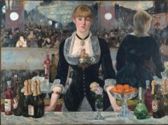
Starbucks Barista
I worked as a Starbucks barista in high school for about four and a half months. I prepared drinks, worked 12+ hour weekends, restocked supplies, and worked with a team of 10+ people across all ages. It was a fast-paced, customer-facing job where I kept the quality and the experience high even under pressure.
- Customer service
- Teamwork
- Working under pressure
- Multitasking
Skills
Technical
- AI workflow automation (Claude & LLM tools)
- Financial modeling (DCF, valuation)
- Python
- JavaScript
- Excel
- Machine learning
- Market analysis
Soft
- Leadership
- Team management
- Communication
- Public speaking
- Mentorship
- Relationship building
- Collaboration
- Strategic thinking
- Adaptability
- Working under pressure
- Partnership building
Relevant coursework
- Linear Algebra
- Calculus 3
- Microeconomics
- Macroeconomics
Beyond work
Certifications & speaker series
The D. E. Shaw group flew me to New York for Connect, their three day programme, and covered the flight and the hotel. We spent it at the Whitney Museum of American Art, meeting people from the firm and from the other cohorts.
- Point72 Spring Academy Sessions
- McKinsey Insight series
Interests
- Reading
- Cooking
- Crocheting
- Thrifting
- Restaurants & Food
- Travel
- Hiking & Nature